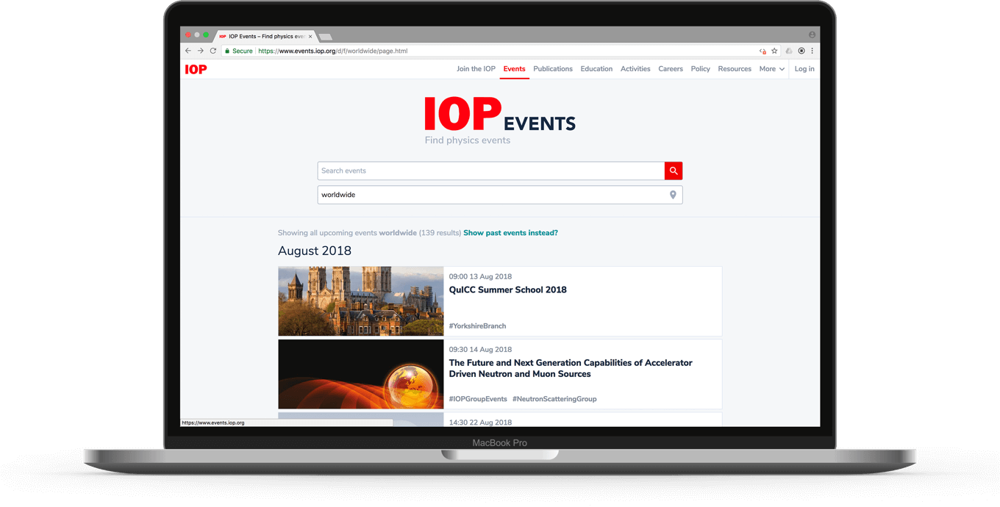
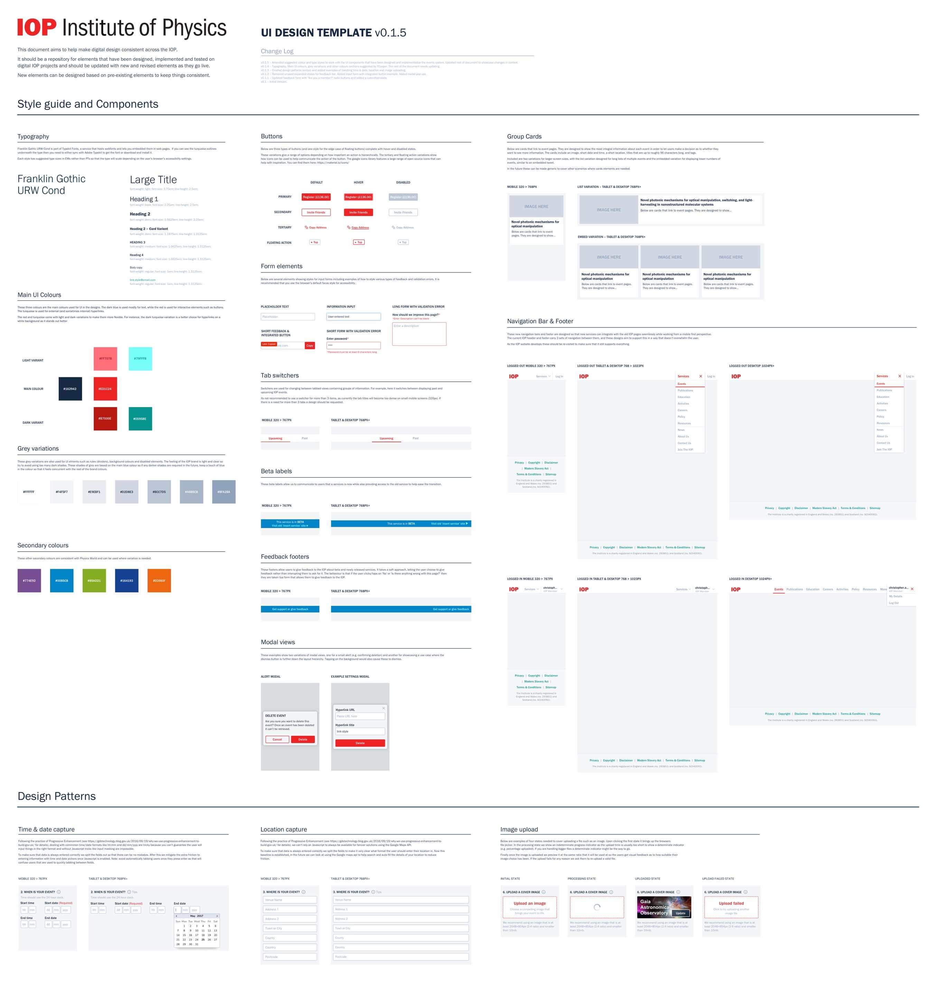

The IOP are a scientific charity that promote the advancement of physics. Their overall aim was to become a more digitally focussed organisation.
We ran several design sprints, that identified a need to improve member engagement through an events discovery system. A series of two-week development sprints followed, which we based on the ‘Scrum methodologyʼ.
By working closely with our team, IOP staff members learned best practices for software development and agile methodology. This would allow them to capably manage and deliver future digital projects.
My responsibilities were UX & UI design, testing proposed features with high-fidelity prototypes and front-end development for the server-side web app (written in Clojure).
We began with the event detail pages themselves, which needed to be clear on any device. To this end, they were designed mobile first, and then implemented to reflow responsively across all devices.

Our aim was to make all IOP events easily sharable, so inputting all of the metadata used by major messaging platforms was integral to this. Additionally, we added a feature to enable page links to be quickly copied to the userʼs clipboard, allowing for even easier sharing.
Once the event pages were completed, we focussed on the environment to display them in. The maximum number of upcoming IOP events never exceeded 150, so we chose a chronological list with powerful search, enabling users to efficiently find events.
To ensured the service was accessible to all IOP members we built it according to the principles of ‘Progressive Enhancementʼ.
These ensure that the users basic needs can be achieved in pure HTML. Then styling and extra interactivity (CSS and Javascript) are built after. This ensures the page is always usable even in the event of poor internet connection or loading failures. The image below shows the HTML only site.

During our user interviews in the design sprints we had discovered that some people who held physics events didn’t even know you could have the IOP advertise your event. Due to this we decided to let anyone add an event to the new system. We added features like ReCAPTCHA and ‘Report as Spam’ to help moderators defend again spam events.
Based on the findings of our initial stakeholder interviews, we allowed any user to add events to the new system, alongside preventative features like ReCAPTCHA and spam reporting to help moderators remove fake events.
IOP members hold a wide range of events from week long conferences to small group days out. This led to design decisions like integrating a WYSIWYG editor, custom images and tags that would let users customise their event pages to fit any kind of event.
These events spanned from week-long conferences to smaller days out. This informed our decision to integrate a WYSIWYG editor, custom images and tags to allow users to fully personalise events.
Later sprints involved adding registration, administration controls, GDPR compliance and further spam protection.
To record our learnings and progress, we produced a digital service manual for the whole organisation. IOP staff would be able to use this for any projects moving forward.
Part of this manual was a style guide, or ‘UI Kitʼ to help align designers working with the IOP in future. This contained basic elements such as type and colours, plus advanced modules and flows like navigation bars, data capture forms, etc.
To avoid this becoming another document that is forgotten about, I opted to make a it a sketch file hosted on GitHub so that designers can copy elements from it into their own designs. We established a rule where new elements couldn’t be added to the kit unless they have been implemented and tested to ensure everything in the kit was of quality.
We created it as a sketch file hosted on GitHub, enabling designers to copy elements from it into their own designs, and guaranteeing anyone can access the latest version. Elements cannot be added to the kit unless they have been implemented and tested to ensure quality.
{kind=link}